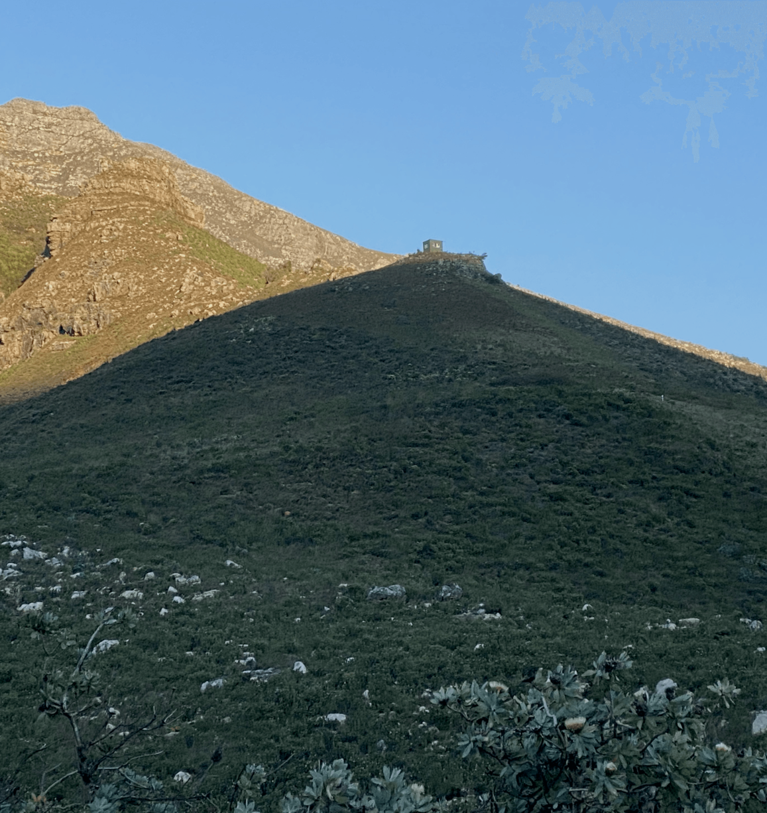

to those of you I held so dear,
now that I am no longer here,
I ask please not to be a bother
and disturb my peace in the here-after.
for, if you look for me, here's the places that my spirit abounds —
in Jonkershoek, where the path past the fire hut rounds,
where the Swartboskloof's stream quenched our dry lips,
on the "berg-pad" where the midday sun shone on our hips,
in Eden's gorge where moss and ferns, the steep walls line,
and streaks of light in the waterfall’s spray did shine,
at the foot of Botmanskop, as the sinking sun over Table Mountain hung,
and along the Idas Valley dams where "piet-my-vrou"'s call has rung —
here have I carried you in times too heavy to bear
or just when my heart's joy I wished to share
but you must stretch your step if want to keep with me
I now run untethered,
for now I am free.